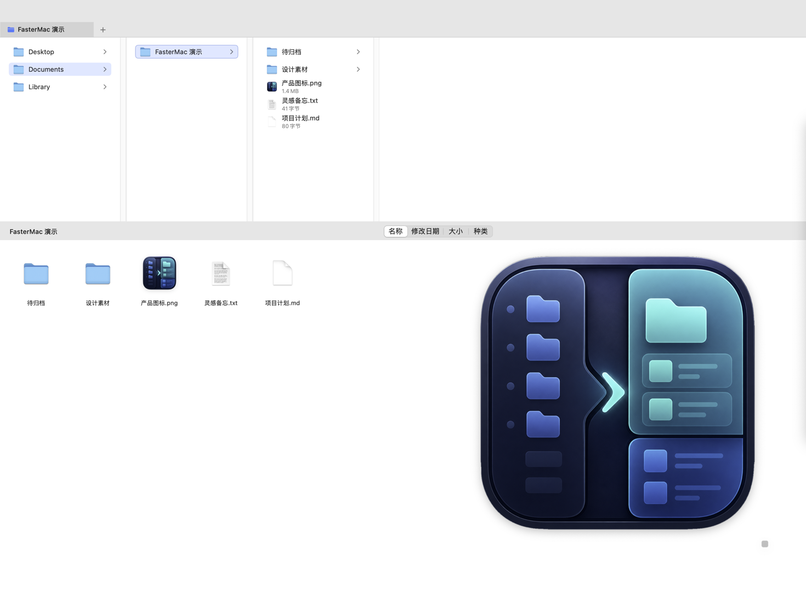
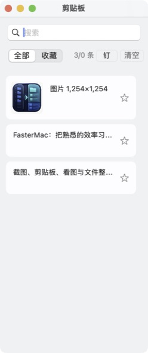
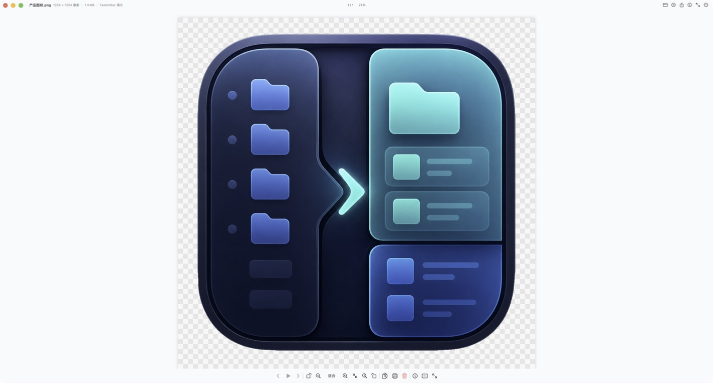
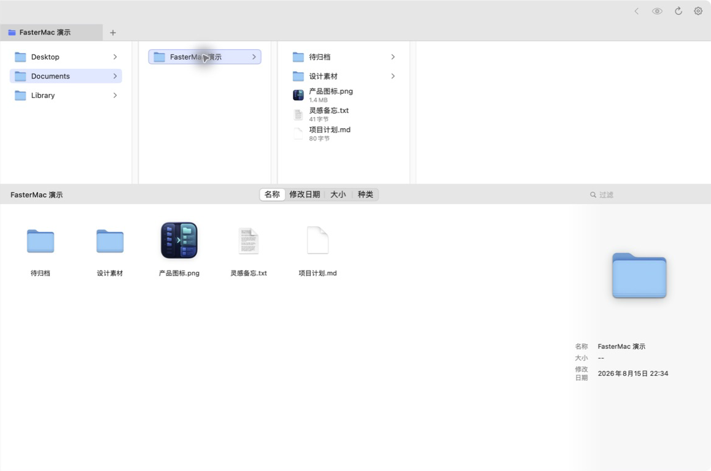

FasterMac 由 linhy413 发起、设计和维护，使用 Codex 辅助开发。
为什么做 FasterMac
我长期习惯 Windows 上那种“用一个入口集中调用各种动作”的工作方式。来到 Mac 以后，熟悉的工具没有 macOS 版本，原来顺手的截图贴图、剪贴板历史、连续看图和文件整理流程，也被分散到了不同的软件里。
于是我开始做 FasterMac：不是把 Windows 界面照搬到 Mac，而是保留那些已经形成肌肉记忆的操作逻辑，再用 macOS 的窗口、快捷键、Space 和系统能力重新实现。
FasterMac 希望解决的事情很简单：少切换应用，少重复操作，让常用动作随时都在手边。
可独立使用的开源组件
首批公开 SmartZip 命名算法、截图坐标与像素换算、拖拽晃动识别，附独立构建脚本、测试和命令行示例。完整应用继续作为独立产品维护。
在仓库中运行 bash scripts/test.sh 即可构建和验证。公开代码使用 AGPL-3.0-only，署名为 linhy413。
完整应用预览
以下界面展示完整应用，不属于本次公开源码。
截图悬浮：把参考内容留在眼前
拖动选择屏幕上的任意区域，截图会立刻变成置顶悬浮图。查资料、对照设计、录入数据或边看边写时，不必再在几个窗口之间来回切换。
- 截图后直接置顶，可跨普通 Space 使用
- 支持拖动、缩放、调整大小和透明度
- 可以锁定位置、复制图片或一键关闭全部贴图
- 按住 Command 拖动，可把悬浮图导出为图片文件

剪贴板：复制过的内容随时找回来
FasterMac 会在本机记录最近复制的文本和图片。窗口隐藏时只保留屏幕右侧的轻量热区，鼠标移到边缘即可唤出；切换 Space 或进入其他应用的全屏界面时也能继续使用。
- 自动记录文本与图片历史
- 支持搜索、收藏和单条删除
- 点击条目即可复制并尝试粘贴回目标应用
- 图片可以预览，也可以直接变成置顶悬浮图

PC 看图：连续浏览，不被单张预览打断
这是一个偏向熟悉桌面习惯的图片浏览器。打开一张图片后，可以继续浏览同一目录中的其他图片，不必每次回到 Finder 重新选择。
- 支持上一张、下一张和幻灯片播放
- 支持适合窗口、实际大小、缩放和旋转
- 支持全屏、复制、分享、打印和查看图片信息
- 可以在 Finder 中定位当前图片，或将图片移到废纸篓

文件夹管理器：用更熟悉的方式整理文件
文件夹管理器把分栏导航和图标视图放在同一个窗口里：上方快速穿行目录层级，下方查看和操作当前文件夹内容。它保留 macOS 的原生外观，同时补上更接近传统桌面文件管理器的键盘与文件操作习惯。
- 分栏导航、图标视图、标签页、排序与即时过滤
- 支持收藏目录、预览信息和 Finder 双向定位
- 支持多选、拖放、剪切、复制和粘贴
- 支持直接按 Delete 移到废纸篓
- 内置批量重命名、名称互换、合并/解散文件夹和 SmartZip

不只这些
FasterMac 还包含截图标注、截图 OCR、摘取文字、快速记事、倒计时、Spotlight 搜索、PDF 工具、批量文件动作，以及可以自行组合的快捷键、脚本和命令动作。
动作面板可通过 Command + Option + Space 呼出，也可以从菜单栏或鼠标中键打开。不同场景下，可以把真正需要的动作放到离手最近的位置。
完整应用与反馈
完整应用面向 macOS 13 或更高版本。本次首次公开组件源码，尚未在仓库发布完整客户端安装包。后续安装包和版本说明会通过 Releases 发布。
发布与许可
公开组件使用 AGPL-3.0-only，并适用合理署名与来源保留条款。允许遵守许可证的商业使用，也可另行洽谈商业授权。完整应用未公开代码和品牌素材另行授权。